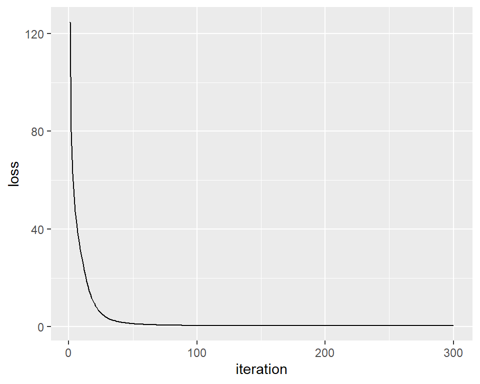
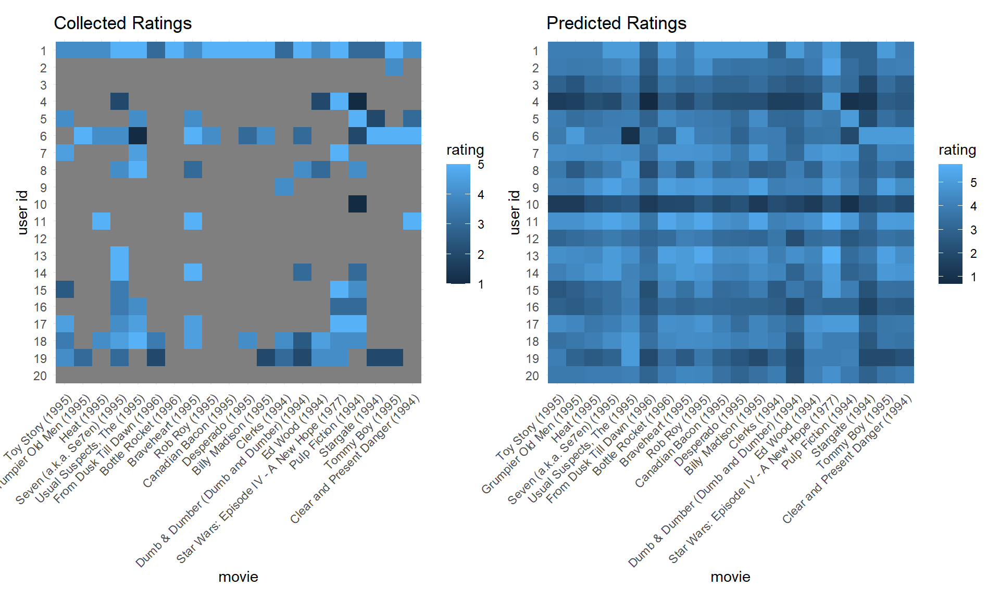

One fundamental idea about personalized recommendation is, recommend items with features matching preferences of users. In the setting of movie recommendation, for example, recommend to people who love martial art Jackie Chan’s or Donnie Yen’s movies, recommend people stressed out for relaxing movies. (not necessarily comedy, as horror film can also be relaxing sometimes.) However, these characteristics in users or movies are usually latent or hard to measure. Therefore, here we built a latent factor model, Funk-SVD, to predict ratings for existing users in the dataset.
Dependencies
library(tidyverse)
library(patchwork)
Data preparation
data_path = "./data/small/ratings.csv"
rating_tidy = read_csv(data_path, col_types = "ccnc") %>%
janitor::clean_names() %>%
select(-timestamp) %>%
mutate(rating = as.double(rating))
rating_matrix = rating_tidy %>%
pivot_wider(names_from = movie_id, values_from = rating, values_fill = 0.0) %>%
column_to_rownames("user_id") %>%
as.matrix()
users = rownames(rating_matrix)[1:20]
movies = colnames(rating_matrix)[1:20]
rating_matrix = rating_matrix[users, movies]
In the data preparation process, we built dataframe from the raw rating file. Then, we transformed the tidy data into a rating matrix, with column represent movies, rows represent users, and values in each grid represent ratings.
Due to the limitation of computing power, we only predict ratings for the first 20 users and the first 20 movies in the dataset, and didn’t implement this algorithm in our shiny app.
Funk-SVD
Funk-SVD was named and authored by Simon Funk.
The core idea of this algorithm is that decompose the user-movie sparse matrix \(R\) into two matrix, the user feature matrix \(P\) and the movie feature matrix \(Q\) which satisfies \(R = P \times Q^T\), then predicted rating by calculating \(\displaystyle R_{um} = P_u \cdot Q^T_m\). Features are latent factors that we can’t and don’t have to directly measure or understand.
In human words, the interaction between a user’s latent characteristics and a movie’s latent characteristics decides the user’s rating to the movie. Find values of these latent characteristics by decomposing the rating matrix, then predict ratings based on them.
To find \(P\), \(Q\), we will generate two random matrix, and perform gradient descent to minimize the loss to let their product approximate the matrix we have.
Gradient Descent
Loss function
The gradient descent will try to minimize the loss, which is defined by the loss function made up by two parts: sum of squared error and regularization terms. The regularization terms were added to prevent the model becoming over-fitted, as it penalize models with more complex \(P\), \(Q\) matrix.
\[\displaystyle L(P, Q) = \sum_{(u, m) \in \text{Train}} \left(R_{um} - P_u \cdot Q^T_m \right)^2 + \lambda \sum_u||P_u||^2 + \lambda \sum_m ||Q_m||^2\]
Gradient:
Through partial differentiation, we can find the gradients:
\[\frac {\partial}{\partial P_u}L = \sum_{m} 2(P_uQ_m^T - R_{um})Q_m + 2\lambda P_u \\ \frac {\partial}{\partial Q_m}L = \sum_{u} 2(P_uQ_m^T - R_{um})P_u + 2\lambda Q_m\]
Implementation
Gradient descent function
grad_desc = function(R, P, Q, K, alpha, lambda) {
M = nrow(R)
N = ncol(R)
for (u in 1:M) {
for (m in 1:N) {
if (R[u, m] > 0) {
e_um = P[u, ] %*% as.matrix(Q[, m]) - R[u, m]
for (k in 1:K) {
P[u, k] = P[u, k] - alpha * (2 * e_um * Q[k, m] + 2 * lambda * P[u, k])
Q[k, m] = Q[k, m] - alpha * (2 * e_um * P[u, k] + 2 * lambda * Q[k, m])
}
}
}
}
return(list(P, Q))
}
We built the function grad_desc to perform the gradient descent process.
Calculate loss
calc_loss = function(R, P, Q, K, lambda) {
M = nrow(R)
N = ncol(R)
R_pred = P %*% Q
loss = 0
for (u in 1:M) {
for (m in 1:N) {
if (R[u, m] > 0) {
loss = loss + (R_pred[u, m] - R[u, m]) ** 2
for (k in 1:K) {
loss = loss + lambda * (P[u, k]**2 + Q[k, m]**2)
}
}
}
}
return(loss)
}
We built the function calc_loss to calculate loss.
Main function
train = function(R, K, max_iter, alpha, lambda){
M = nrow(R)
N = ncol(R)
set.seed(7)
# generate random matrix
P = matrix(runif(M*K), nrow = M)
Q = matrix(runif(N*K), nrow = N) %>% t()
# record the loss of each iteration
loss_record = list()
for (step in 1:max_iter) {
res = grad_desc(R, P, Q, K, alpha, lambda)
P = res[[1]]
Q = res[[2]]
loss = calc_loss(R, P, Q, K, lambda)
loss_record[step] = round(loss, 2)
}
return(list(P, t(Q), loss_record))
}
The main function has several hyper-parameters:
- \(K\): number of latent factors
- \(\text{max iter}\): number of iterations performing gradient descent
- \(\alpha\): learning rate
- \(\lambda\): coefficient of regularization term
Train
Here we performed the train process, and plot the loss over iterations. We can see that after about 100 iterations, the loss is close to 0, suggest the model is well fitted.
res = train(rating_matrix,
K = 10,
max_iter = 300,
alpha = 0.01,
lambda = 0.0004)
P = res[[1]]
Q = res[[2]]
loss_record = res[[3]]
loss_vec = loss_record %>% as.vector()
loss_path = tibble(
loss = as.numeric(loss_vec),
iteration = as.numeric(1:length(loss_vec)))
loss_path %>%
ggplot(aes(y = loss, x = iteration)) +
geom_line(group = 1)

Predict & Visualization
After training, we then predict user’s ratings on movies they haven’t seen, and visualize the predict result.
R_pred =
P %*% as.matrix(t(Q)) %>%
tibble::as_tibble()
colnames(R_pred) = colnames(rating_matrix)
movie_info = read_csv("./data/small/movies.csv", col_types = "ccc") %>%
janitor::clean_names() %>%
select(movie_id, title)
R_pred_tidy =
R_pred %>%
mutate(user_id = rownames(rating_matrix)) %>%
pivot_longer(movies, names_to = "movie_id", values_to = "rating") %>%
left_join(movie_info)
pred_score =
R_pred_tidy %>%
ggplot(aes(x = reorder(title, as.numeric(movie_id)), y = reorder(user_id, -as.numeric(user_id)), fill = rating)) +
geom_tile() +
theme_minimal() +
theme(axis.text.x = element_text(angle = 45, hjust = 1, vjust = 1)) +
labs(x = "movie", y = "user id", title = "Predicted Ratings")
plot_df =
rating_matrix %>%
tibble::as_tibble() %>%
rownames_to_column("user_id") %>%
pivot_longer(movies, names_to = "movie_id", values_to = "rating") %>%
mutate(user_id = as.integer(user_id)) %>%
left_join(movie_info)
plot_df[plot_df == 0] = NA
original_score =
plot_df %>%
ggplot(aes(x = reorder(title, as.numeric(movie_id)), y = reorder(user_id, -as.numeric(user_id)), fill = rating)) +
geom_tile() +
theme_minimal() +
theme(axis.text.x = element_text(angle = 45, hjust = 1, vjust = 1)) +
labs(x = "movie", y = "user id", title = "Collected Ratings")
original_score + pred_score
